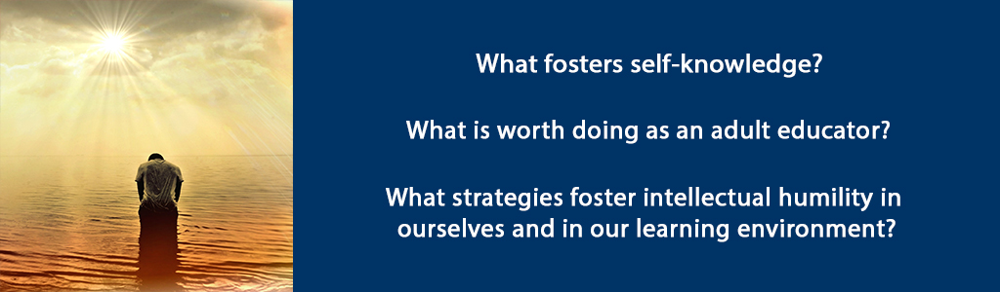

Overview
In this unit, you will explore the role of trust, confidence and intellectual humility in the practice and dispositions of the adult educator who is trying to establish an authentic learning community. You will consider your values as an individual as well as an educator and help you to define your role and purpose as an adult educator.
Unit 9 focuses on three guiding questions:
- What fosters self-knowledge?
- What is worth doing as an adult educator?
- What strategies foster intellectual humility in ourselves and in our learning environment?
Topics
- Learning to Trust Ourselves in Difficult Situations
- Approaches to Making a Contribution in an Intellectually Humble Way
Unit Learning Outcomes
When you have completed this unit you should be able to:
- Explain why self-knowledge is an important part of being an effective adult educator and leads to increased self-confidence and humility.
- Describe the contribution you want to make as an adult educator.
- Define intellectual humility in your own words.
- Describe strategies to foster intellectual humility in yourself and in your learning environment.
Learning Activities
Here is a checklist of learning activities you will benefit from in completing this unit. You may find it helpful in planning your work.
9.1 Learning to Trust Ourselves in Difficult Situations
We see the world through our own lens - which is why knowing ourselves is so very important. What parts of your past trigger reactions in you? Where do you find you are at your best? What is important to you? What bothers you? If you can articulate these things clearly then you will have more confidence and trust yourself in difficult situations. Why is this the case? Because when we honestly know ourselves and we join a sense of humble awareness with a sincere desire to work with others to make a positive impact, we have more confidence, self-efficacy and an increased willingness to engage – even in difficult situations. In the Bible we read that God is working through all things for our good (Romans 8:28). If we really believe this, consider how this belief might influence your thinking, allowing you to find peace and a humble confidence even in difficult situations.
How does one get to know oneself? Times of solitude spent reading, creating, walking in nature, relationships with others, new experiences, travel are all activities that allow us to get to know ourselves, depending on our frame of mind. If we read material that helps us ask some of the questions mentioned above through exploring the life of another person (fictional or real) or if we take part in experiences that help us discover what we are good or what matters to us, these will lead to increased self-knowledge. Flannery O’Connor illustrates the power of narrative saying:
There is something in us, as storytellers and as listeners to stories, that demands the redemptive act, that demands that what falls at least be offered the chance to be restored. (Arntz, V. 2018)
Why does this matter for the adult educator? It matters because education is about transformation of people – not just their intellectual growth but themselves. Transformation requires knowing oneself first.
While Wheatley somewhat discounts the role of hope (278-280), Christian leaders and teachers are indeed people of hope and optimism who nonetheless realize the importance of Havel’s definition that
Hope is not the conviction that something will turn out well, but the certainty that something is worth doing no matter how it turns out” (Wheatley, 280).
In other words, we need to welcome the reality of whatever learners are bringing to the learning environment and look for the possibilities hidden in it - the possibilities for redemption and restoration. For example, some learners may have painful memories of school, a sense of inadequacy or else an inflated view of themselves. Some learners may have experienced severe trauma that affects their ability to process information. Some learners may have trouble reading or writing to the level we would hope they could achieve as graduate students. Whoever our learners are and whatever abilities or disabilities they bring, we need to create the conditions so they can become better human beings and more knowledgeable and skillful because of having spent time with us as their learning guides.
Our hope and vision must be rooted in the present (See Daily Thoughts from JeanVanier). If that present is fraught with difficulties and challenges, the self-aware teacher leader embraces that reality and moves forward trusting themselves and, for the Christian, trusting God is working all things for our good. This requires courage – as Wheatley notes it is rooted in ‘coeur’ or heart (279). Courage with heart is needed to face the challenges of handling challenging situations when we ourselves might not feel equipped. Courage with heart tempered by intellectual humility is needed to transform lives through education. Effective adult educators are people with a vision for good, with confidence that they can influence positive change and help facilitate transformation in their learners because they are continually working on their own self-knowledge and will research the strategies and methods as well as the content that will be most helpful for their learners to be successful.
9.1.1 Activity: Read and Reflect
9.1.2 Activity: Did You Know?
9.2 Approaches to Making a Contribution in an Intellectually Humble Way
The Foundation for Critical Thinking defines intellectual humility:
Having a consciousness of the limits of one’s knowledge, including a sensitivity to circumstances in which one’s native egocentrism is likely to function self-deceptively; sensitivity to bias, prejudice and limitations of one’s viewpoint. Intellectual humility depends on recognizing that one should not claim more than one actually knows. It does not imply spinelessness or submissiveness. It implies the lack of intellectual pretentiousness, boastfulness, or conceit, combined with insight into the logical foundations, or lack of such foundations, of one’s beliefs.
As a Christian adult educator, aim to be a servant leader-teacher. As servant leader teacher, seek to engage people’s heads, hearts and hopes and empower learners to turn their newfound knowledge and skills into action. Infuse your role with a perspective of the common good and engage confidently in contemporary cultural tensions. With students who are Christian this perspective of the common good finds its roots and expression in a relationship with Jesus Christ. For students who are not of the Christian faith, strive to espouse this in word and example in a way that is respectful of their heritage and traditions while at the same time giving them an understanding of the Christian worldview. Take the time to listen for what is important to them and to understand their beliefs in order to build bridges of understanding through respect.
Realizing that our core values, personality traits and characteristics impact to how we learn and teach, take the time to discern your essential values. For example, I have identified the following six essential values to incorporate into my life and teaching: honesty, integrity, persistence, desire to learn, compassion/empathy and community. Because I value compassion/empathy and community, I put the learner first and design my curricula and methodologies to suit the learners in my class. Because I value persistence and the desire to learn, I don’t give up on students and I try to find ways to help them learn through different methods and alternate ways that they can demonstrate their learning.
These values direct my entire teaching methodology; I espouse the goals of differentiated instruction (basically changing instructional methods to adapt to different learners) and aim to create a space for learning that empowers all students to succeed. (See here for more information). Differentiated instruction is a seamless part of my instructional planning and practice and I intentionally create opportunities to learn about students’ strengths, needs, interests, preferences and ways of learning. Here is an example of a self-assessment tool to help identify a learner’s learning style. To this end I use meaningful engaging tasks, flexible grouping, and ongoing assessment and adjustment. I differentiate the content, process, or product components of the educational experience by using a range of strategies and methods, e.g., anchor activities, tiered lessons, small-group instruction, and varied tasks.
I’ve used my own practice as a Christian educator as an example to give you some ideas and direction. Please take the time to explore the resources linked in the notes and other resources in your Brookfield and Silberman texts. The approach taken throughout this course is an intellectually humble one. In chapters five and six Brookfield (2013) particularly addresses the power dynamic in the classroom, awareness of which may foster a more intellectually humble approach. You are encouraged to use your texts as primary resources for more detailed information about specific strategies and approaches to making a contribution as an adult educator while remaining intellectually humble.
9.2.1 Activity: Reading
9.2.2 Activity: Pinsent Videos
Summary
In this unit, you have had the opportunity to learn about the role of trust, confidence and intellectual humility in the practice and dispositions of the adult educator. You have considered your values as an individual as well as an educator and further defined your role and purpose as an adult educator. As you move on to the last unit of this course, consider your values and how you view your role as an adult educator. The culminating assignment is a platform of beliefs where this will be important.
Assessment
Please submit your assignments in the appropriate dropbox in Moodle. See the Assessment section for the Grading Criteria that explains how your assignments will be evaluated.